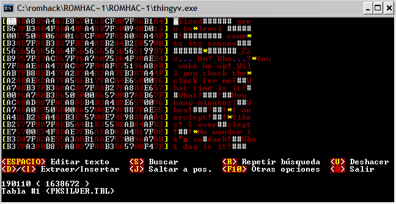
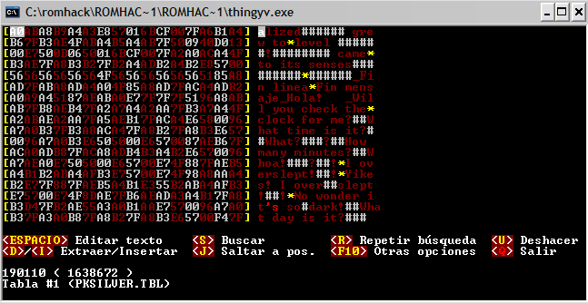
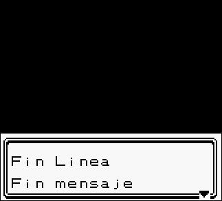
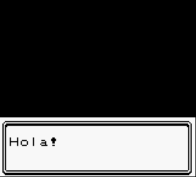

GUÍA DE TRADUCCIÓN DE ROMS
Por DaRKWiZaRDX
CÓDIGOS DE CONTROL
Pues ya hemos modificado la primera ROM con codificación propia (es decir, no
ASCII), esta lección se dedicará a develar qué hacen ciertos caracteres hex que
vimos en el ejemplo anterior (el pokémon silver).
A éstos caracteres se les denomina "códigos de control", y justamente hacen eso,
controlan la salida de texto,
veamos qué pasa en el caso del pokémon silver, aquí tenemos una imagen del
trabajo de la sección anterior:

Como ves, después del signo de interrogación de la primera frase (el de después
de "Wha...?") hay un caracter hex que no tenemos en la tabla, la mejor forma de
saber qué representa (o mas bien que HACE) este caracter es mirando en la ROM:

Podemos ver que después del signo de interrogación el juego baja una línea,
entonces sabemos que ése byte es usado para bajar una línea de texto, miramos en
el editor qué valor hex tiene, en este caso es $4F y lo agregamos a la tabla de
la siguiente forma:
*43 <-- Éstos códigos (los que bajan una
línea) se denominan "line break"
No hay que agregarlo de la forma normal ( 43=* ) ya que sino lo tomaría como el
caracter '*', si usamos editor hex para traducir no será mucho problema, pero si
traducimos con scripts (eso lo veremos más tarde) en lugar de mostrar un salto
de línea mostrará un asterisco ( * ) y eso nos hará la traducción bastante tediosa.
También tenemos otro valor desconocido: El que está después de "you woke me up!"
(o "Me despertaste!" si lo traduciste), vemos en la ROM lo que hace... El texto
queda en pantalla hasta que pulsamos un botón, y luego avanza para mostrar el
texto que falta.
NOTA IMPORTANTE: La mayoría de editores hex no manejan un código especial para
realizar esto, como sí lo hacen por ejemplo para el salto de línea (como
acabamos de ver), yo recomiendo hacer lo siguiente:
Si vas a traducir utilizando editor hex (como lo he estado demostrando en lo que
va de la guía), asígnale un caracter que uses muy poco, para usarlo
específicamente para esta tarea, por ejemplo, un guión bajo _ ).
En cambio, si vas a traducir utilizando scripts, recomiendo que lo agregues como
(## es el código hex):
##=(NEXT)\n
y utilices para extraer los scripts algún programa que admita el "\n" como salto
de línea (RomJuice es uno de ellos). Es tu decisión.
En fin, volviendo al tema, el código hex es $51, así que lo agregamos a la tabla
como prefiramos.
Por ahora lo haremos como:
51=_ <-- Éstos códigos (los que esperan
pulsación de botón para seguir mostrando texto) se denominan "section break"
Agregamos esos caracteres a la tabla y abrimos el editor en el offset del
texto:

Como ves reemplaza los caracteres por asteriscos y guiones bajos (esto supongo que ya
lo sabrías...), ahora pulsa la barra espaciadora en la 'Z' y vuelve a pulsar en
el '!' y escribe algo como: "Fin linea*Fin mensaje_Hola!
" en el editor (sólo para probar :D)

Probamos la Rom en el emulador y vemos qué pasó:


¡Weee! ¡Modificamos los códigos de control! Éstos códigos te ayudarán a hacer
una traducción de mejor calidad, ya que el espacio que te sobra en una línea lo
puedes usar en la siguiente, así traducciones cortas ocupan menos y las
traducciones más largas pueden ocupar ese espacio.
Ahora nos queda un código más por agregar a la tabla... ¿Cómo sabe el juego
en dónde acaba un diálogo y comienza en siguiente, que se dará en otra parte del
juego? Mediante un código especial, denominado "message
break", para encontrarlo debemos buscar el valor hex que está después de
la última letra que sale por pantalla, en nuestro caso, viene después de "Hola!
" y es el código hex $00. Deberás agregarlo a la tabla de la siguiente manera:
/00
Quizás si traduces en editor hex no encuentres diferencia entre darle este
caracter (la barra) o darle otro, pero sí hace una gran diferencia al momento de
traducir con scripts. Algunos traductores prefieren usar este código para los
section break, es tu decisión. Yo recomiendo agregar los caracteres a la tabla
como lo expliqué aquí.
Pues bueno, fue bastante corta esta sección, supongo que habrá quedado claro,
cualquier cosa que no se entienda puedes preguntarme a mi mail. ¡Nos vemos en la
siguiente lección!
<< Anterior - Indice - Siguiente >>